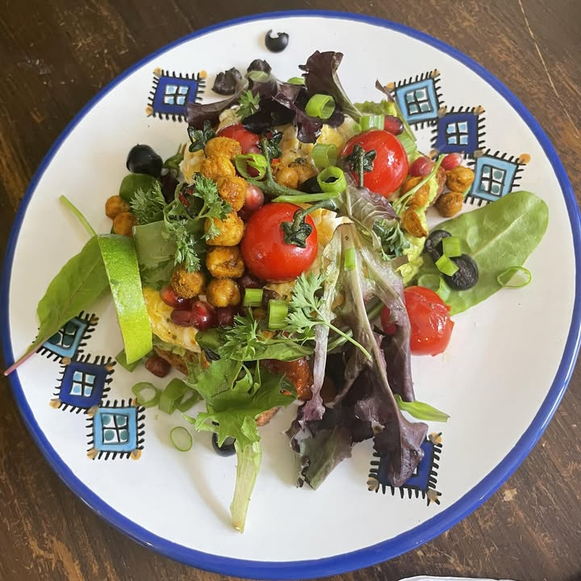

11 King Street · Leicester
Brunch, with
a world of flavour.
Homemade food, patisserie classics and a good reason to make time for a café stop.
Explore food & drinksFind us on King Street
Coffee, food, cakes
Leave room
for a little patisserie.
La Forêt describes its food and patisserie as inspired by flavours from around the world. Take a look at the café’s latest posts, or ask what’s on the counter today.
See La Forêt on InstagramCake selection, dietary information and any food-service cut-off need confirmation with the café.
Your King Street stop
Come for the food.
Stay for a catch-up.
Find La Forêt at 11 King Street in Leicester. Check with the café for current service times, access or seating questions before making a special trip.
Find 11 King StreetBefore you pop in.
Are these the café’s eat-in prices?
The prices above are references from the Deliveroo menu checked on 20 October 2026. They do not confirm eat-in prices or current availability. Ask the café about its current menu.
Can I order or reserve a table here?
This local preview does not accept orders or table reservations. The Deliveroo links open the existing provider separately. Contact the café for seating questions.
What about allergies or dietary needs?
Descriptions are shortened references, not a complete ingredients or allergen guide. Check directly with the café or the provider before choosing food.
A little note from King Street
Café news,
when you fancy it.
Try a local demonstration of an email signup for café and cake updates.